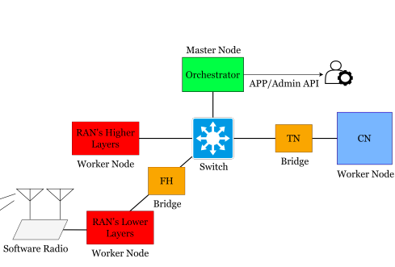
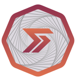

|
Sepehr Ganji I'm a Computer Science master student at NetMedia.sys at University of Calgary. I've contributed to GSoC 2025, have been an Intern at TELUS, and Software Engineer at Ergo Platform. |

|
ProjectsI'm interested in everything related to computers and electronics. I love trying new things and learning! |
|
|
Google Summer of Code 2025: Port FatFS to RTEMS
GSoC Archive / Source Code In this paper, we share our findings, accompanied by a comprehensive online codebase, about the best practice of using different open-source projects in order to realize a flexible testbed for academia and industrial Research and Development (R&D) activities on the future generation of cellular networks. |

|
Ergo GraphQL: Ergo Platform GraphQL server
Source Code / Live Demo
By leveraging the current explorer database, we developed a GraphQL server that provides a flexible and efficient way to query blockchain data.
|
|

|
CN2F: A Cloud-Native Cellular Network Framework
Sepehr Ganji, Shirin Behnaminia, Ali Ahangarpour, Erfan Mazaheri, Sara Baradaran, Zeinab Zali, Mohammad Reza Heidarpour, Ali Rakhshan, Mahsa Faraji Shoyari Source Code / arXiv In this paper, we share our findings, accompanied by a comprehensive online codebase, about the best practice of using different open-source projects in order to realize a flexible testbed for academia and industrial Research and Development (R&D) activities on the future generation of cellular networks. |
|

|
Rosen Bridge: An open-source protocol for cross-chain asset transfers
Source Code / Live Demo Rosen is an Ergo-centric bridge fortified with multi-layered security protection. In the initial layer, Watchers monitor network activities and report valid bridge-related events to the subsequent layer, Guards. These Guards then carefully process the reported events and execute required actions. In brief, Guards are dedicated to security maintenance and executing responses, while Watchers are focused on the ongoing monitoring of activities and transparent reporting. |